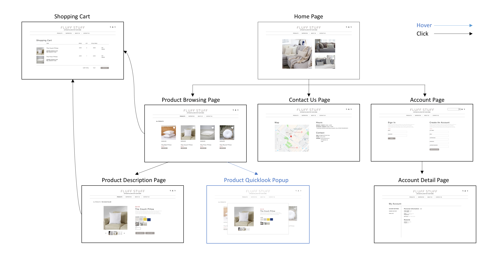

Tools: Adobe XD, Invision, HTML/CSS, JavaScript
Skills: User Testing, Wireframing, Prototyping, Wev Development
Course: 05-430 Programming Usable Interfaces
Timeline: September-November 2018
This project simulates the design of a website from conception to implementation. The website is an e-commerce site for Fluff Stuff, a pillow brand that specializes in artisan throw pillows. The aim of their web store is to highlight the high quality and high production that goes into creating the brand’s hand-knitted and hand-dyed products. In addition, the website aims to showcase the variety and customization that are offered for each of their pillows. After numerous iterations and user testings, a minimal and sophisticated design was chosen for the web store. The design works to encourage a direct and convenient shopping experience while conveying the quality and essence of the brand as a whole.
The goal of the user is to have a direct and convenient shopping experience.The first main consideration for the design of the website is process clarity. This was achieved through a minimal and organized interface. All important features are concentrated at the top of the web page so users can easily find them. This includes the navigation bar as well as the shopping path indication. The design also avoids any extraneous features, such as a filter side bar. This is to ensure that there is one clear path from the home page to the user’s desired product. This approach seems appropriate for Fluff Stuff given the rather small amounts of products and clear product categorization.
The second consideration was to create a convenient shopping experience. Features that addresses this consideration included the product “quicklook” popup that appears when shoppers hover over the “quicklook” button on the product browsing page. This feature allows users to directly compare multiple products without having to click into each product detail page, which was a concern raised during the user testing phase. Another feature for the shoppers’ convenience is the “quick add” feature where shoppers could directly add their chosen product from the product browsing page as well.
Finally, the website uses a warm neutral palette consisting of creams, beiges, and browns and elegant and simple typefaces. Both these aspects were chosen to convey the sense of warmth associated with the hand-knit thick and soft cotton that the brand uses with their products while still maintaining the feeling of sophistication that comes with an artisan brand.
A combination of hover and clicks are used to transition between the web page. The temporariness of the hover function contributes to a convenient shopping experience while the clicking motion adheres to the traditional format of web transitions.
I implemented the website design and functionalities with HTML/CSS and Javascript. The final product can be found here.